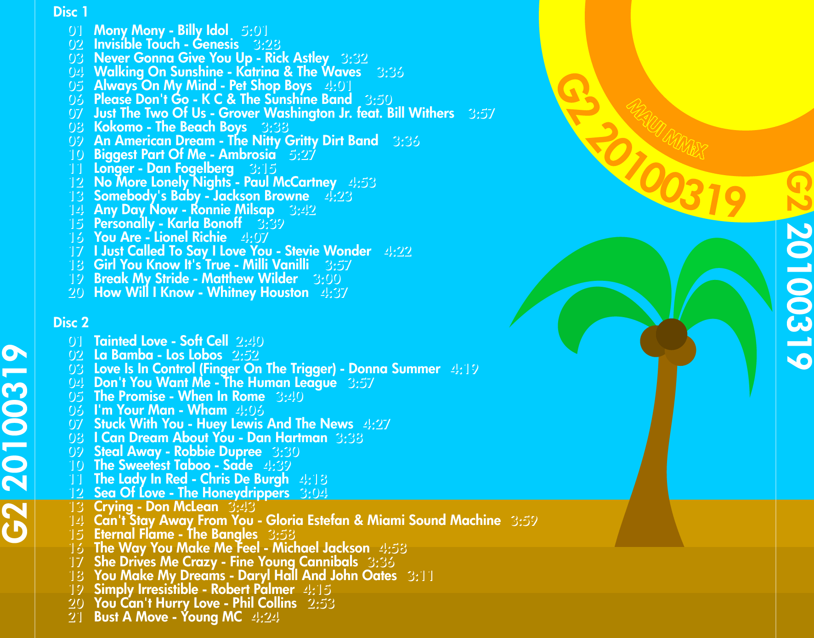

G2 20100319

I hate 80's Music, or at least that's what I thought, and what I've offended countless people by saying in the past. If you're a regular reader of my ramblings, you're familiar with my G2 series of mixes I make for Maria. Among the various mixes, I've tackled the 60's and 70's on their own mix, with the latter being one of the current kings of the hill as a double disc album. So, it's with a humble heart that I apologize to all of those people who I have offended with this mistaken odious proclamation. I'm sorry, I just wasn't giving the 80's enough credit, and the statement was too broad. I just hate Tears for Fears, The Cure, and that general style of 80's New Wave (as well as some of the overly synthesized or strong-beat) music. Now that I've probably offended the same fans of the 80's all over again, let's get on with this mix.
When I originally came up with a tentative song list for this album, it contained enough music to fill more than 3 CD's - a new record, and one that I couldn't convince myself to make. I've never had a great connection with 80's music. For the most part, during that decade my parents were listening to other music, or my siblings weren't listening to this music until the end of the decade. We were busy playing outside. I have very few memories associated with the original release of most of these songs, and consequently I have very little affinity for it. For you fans of 80's music that are still reading (and everyone else, as well), I should make it clear that what I set out to make isn't a "Best Of" mix for the 80's. You'll read through the track list, and say “You picked that song by them? Oh, you clearly could have picked a better one!” I know there is better music out there, but in general I was aiming for a mix that says emphatically, “Maria, I love you.” With that in mind (and knowing there will be a few exceptions to that rule), let's get on to the track listing:
Disc 1
|Track|Title|Artist|Time| |---|---|---|---| |01|Mony Mony|Billy Idol|5:01| |02|Invisible Touch|Genesis|3:28| |03|Never Gonna Give You Up|Rick Astley|3:32| |04|Walking On Sunshine|Katrina \& The Waves|3:36| |05|Always On My Mind|Pet Shop Boys|4:01| |06|Please Don't Go|K C \& The Sunshine Band|3:50| |07|Just The Two Of Us|Grover Washington Jr. feat. Bill Withers|3:57| |08|Kokomo|The Beach Boys|3:38| |09|An American Dream|The Nitty Gritty Dirt Band|3:36| |10|Biggest Part Of Me|Ambrosia|5:27| |11|Longer|Dan Fogelberg|3:15| |12|No More Lonely Nights|Paul McCartney|4:53| |13|Somebody's Baby|Jackson Browne|4:23| |14|Any Day Now|Ronnie Milsap|3:42| |15|Personally|Karla Bonoff|3:39| |16|You Are|Lionel Richie|4:07| |17|I Just Called To Say I Love You|Stevie Wonder|4:22| |18|Girl You Know It's True|Milli Vanilli|3:57| |19|Break My Stride|Matthew Wilder|3:00| |20|How Will I Know|Whitney Houston|4:37|
Disc 2
|Track|Title|Artist|Time| |---|---|---|---| |01|Tainted Love|Soft Cell|2:40| |02|La Bamba|Los Lobos|2:52| |03|Love Is In Control (Finger On The Trigger)|Donna Summer|4:19| |04|Don't You Want Me|The Human League|3:57| |05|The Promise|When In Rome|3:40| |06|I'm Your Man|Wham|4:06| |07|Stuck With You|Huey Lewis And The News|4:27| |08|I Can Dream About You|Dan Hartman|3:38| |09|Steal Away|Robbie Dupree|3:30| |10|The Sweetest Taboo|Sade|4:39| |11|The Lady In Red|Chris De Burgh|4:18| |12|Sea Of Love|The Honeydrippers|3:04| |13|Crying|Don McLean|3:43| |14|Can't Stay Away From You|Gloria Estefan \& Miami Sound Machine|3:59| |15|Eternal Flame|The Bangles|3:58| |16|The Way You Make Me Feel|Michael Jackson|4:58| |17|She Drives Me Crazy|Fine Young Cannibals|3:36| |18|You Make My Dreams|Daryl Hall And John Oates|3:11| |19|Simply Irresistible|Robert Palmer|4:15| |20|You Can't Hurry Love|Phil Collins|2:53| |21|Bust A Move|Young MC|4:24|

Both discs are unusually full, at 1:19:57 each (without any gaps between songs). That's just 3 seconds to spare on an 80 minute CD. As usual, some of this is just really sappy, and you may not love the songs, and may not like what I've picked... but you didn't make the mix - I did. Put your mix where your mouth is.
I don't have much to say about the artwork this time around. I aimed for a generic 80's style, but it's not one that I'm very good at. No gradients (causing/using stripes instead), bold colors, simple hand-drawn illustrations. In general, I had a t-shirt in mind when making the cover, and a certain destination in mind as well. I am, in no way, saying the great typeface of Futura is 80's-ish, but it worked well for my purposes.
As usual, I hope you enjoy some aspect of it, or that it inspires you, in some way, to make your own mix, and continue to attach memories to the plethora of good music out there.